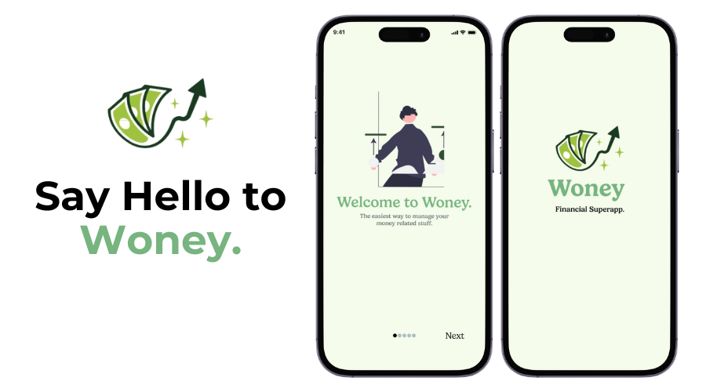
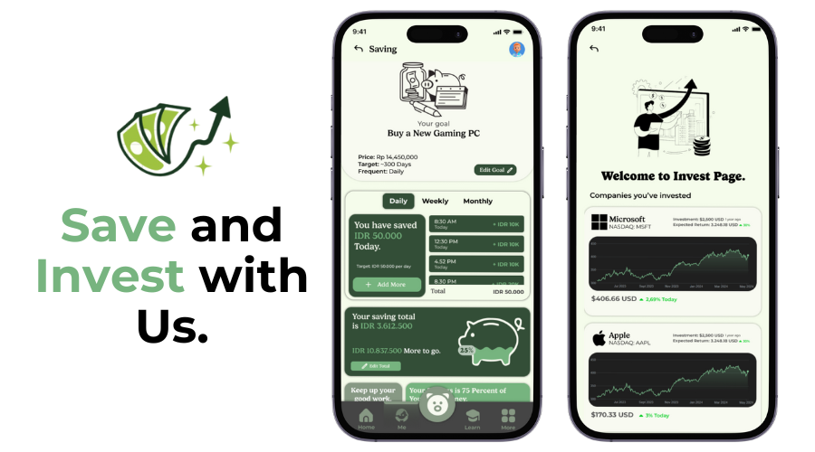
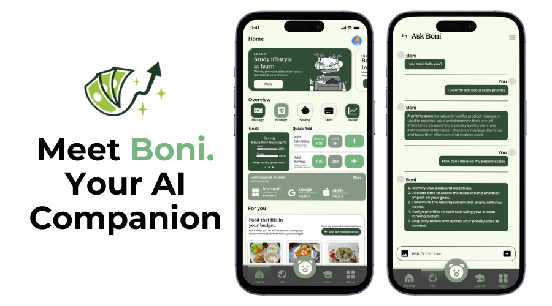

Woney menawarkan pendekatan interaktif dengan bantuan Boni, asisten AI yang memberikan panduan real-time dan edukasi keuangan. Aplikasi ini tidak hanya membantu dalam pengelolaan keuangan sehari-hari tetapi juga memberikan pengetahuan mendalam tentang investasi dan pasar saham, serta solusi praktis untuk menghindari jebakan hutang.
Petisi
Woney: financial superapp, aplikasi FINANCE SAKTI! atur tabungan SERTA INVESTASI DI SATU APLIKASI.

Populer
Unggulan
Aplikasi
Teknologi
Team Adelatte
7 Januari 2024
Terverifikasi
30.000
orang telah
menandatangani
petisi.
Target: 30.000
Deskripsi
Woney adalah aplikasi super app yang dirancang khusus untuk membantu masyarakat Indonesia
mengelola keuangan mereka dengan lebih baik dan bijak. Dilengkapi dengan Boni, asisten berbasis
Artificial Intelligence, Woney menawarkan solusi interaktif untuk membantu pengguna mengatur
keuangan pribadi mereka dengan lebih efektif. Mulai dari cara membagi keuangan menurut skala
prioritas, pentingnya memiliki dana darurat, hingga pengetahuan tentang pasar saham dan
investasi, Woney memastikan setiap pengguna mendapatkan panduan yang mudah dipahami dan
diaplikasikan.
Di tengah rendahnya literasi keuangan di Indonesia, Woney hadir sebagai jawaban atas kebutuhan
akan edukasi keuangan yang praktis dan mudah diakses. Dengan fitur-fitur interaktif yang
ditawarkan, pengguna akan belajar secara real-time bagaimana mengelola uang dingin dan uang
panas, serta memahami pentingnya perencanaan keuangan yang matang. Woney dirancang untuk
membantu pengguna menghindari kesalahan dalam pengelolaan keuangan yang sering berujung pada
masalah hutang dan ketidakstabilan finansial.
Salah satu masalah utama yang dihadapi masyarakat saat ini adalah maraknya penggunaan layanan
pinjaman online. Dengan data yang menunjukkan 64,8 juta penduduk Indonesia telah menggunakan
layanan ini, dengan total pinjaman mencapai Rp 221,56 triliun, Woney bertujuan untuk memberikan
solusi yang tepat melalui edukasi keuangan yang mendalam. Dengan pemahaman yang lebih baik
tentang literasi keuangan, diharapkan pengguna dapat mengurangi ketergantungan pada pinjaman
online dan mengelola keuangan mereka dengan lebih baik.
Kemudahan akses adalah salah satu keunggulan utama Woney. Dengan antarmuka yang user-friendly,
pengguna dapat dengan mudah mengakses berbagai fitur dan mendapatkan panduan keuangan yang
sesuai dengan kebutuhan mereka. Woney memastikan bahwa setiap pengguna, baik yang pemula maupun
yang sudah berpengalaman, dapat memanfaatkan aplikasi ini untuk mencapai tujuan keuangan mereka.
Woney tidak hanya berfokus pada pengelolaan keuangan sehari-hari, tetapi juga memberikan
pengetahuan mendalam tentang investasi dan pasar saham. Dengan bantuan Boni, pengguna dapat
belajar tentang berbagai instrumen investasi dan cara mengoptimalkan pengelolaan aset mereka.
Ini membuat Woney menjadi mitra yang sempurna untuk siapa saja yang ingin memperluas pengetahuan
mereka tentang dunia finansial dan meningkatkan kesejahteraan ekonomi mereka.
Selain memberikan edukasi dan panduan, Woney juga menawarkan berbagai alat dan fitur yang
memudahkan pengguna dalam merencanakan dan mengelola keuangan mereka. Mulai dari kalkulator
keuangan, pengingat pembayaran, hingga analisis pengeluaran, semua fitur ini dirancang untuk
membantu pengguna mengelola keuangan dengan lebih baik dan mencapai stabilitas finansial. Woney
memastikan bahwa pengguna memiliki semua alat yang mereka butuhkan untuk meraih kesejahteraan
finansial.

Dengan Woney, pengguna tidak hanya mendapatkan aplikasi pengelola keuangan, tetapi juga mitra
edukasi yang siap membantu mereka memahami dan mengelola keuangan dengan lebih baik. Woney
adalah solusi komprehensif untuk meningkatkan literasi keuangan dan membantu masyarakat
Indonesia mencapai stabilitas dan kesejahteraan finansial. Dengan pendekatan yang inovatif dan
teknologi AI canggih, Woney siap menjadi sahabat keuangan Anda dalam setiap langkah menuju masa
depan yang lebih cerah.
Mengenal Inovator
Team AdeLatte
5
Petisi diajukan
3
Urun Dana Diajukan
9
Tanda Tangan Petisi
6
Kontribusi Urun dana
Biodata
Kami adalah tim inovatif yang terdiri dari para profesional berdedikasi di bidang teknologi dan keuangan. Dengan keahlian dalam Artificial Intelligence dan pemahaman mendalam tentang literasi keuangan, Kami berkomitmen untuk menciptakan solusi keuangan yang interaktif dan efektif guna membantu masyarakat Indonesia mengelola keuangan mereka dengan lebih baik dan mencapai kesejahteraan finansial.
Inovator Unggulan
Bergabung pada 1 Oktober 2022
Pertanyaan yang Sering Diajukan (FAQ)
-
-
Untuk Saat ini, kami berencana menambahkan bahasa Indonesia dan Inggris terlebih dahulu ke dalam Woney. Kami akan menambahkan lebih banyak bahasa di masa mendatang untuk memenuhi kebutuhan pengguna global.
-
Ya, Woney dirancang untuk digunakan oleh semua orang, baik yang pemula maupun yang sudah berpengalaman dalam mengelola keuangan. Antarmuka yang user-friendly dan panduan interaktif dari Boni memastikan bahwa setiap pengguna dapat dengan mudah memahami dan memanfaatkan fitur-fitur aplikasi ini.
-
Keamanan data pribadi pengguna adalah prioritas utama kami. Woney menggunakan teknologi enkripsi terbaru untuk melindungi data Anda dan memastikan bahwa informasi pribadi Anda tetap aman dan terjaga kerahasiaannya.
-
Woney menggunakan teknologi AI untuk terus memperbarui dan menyempurnakan konten edukasinya. Asisten AI Boni secara real-time memberikan informasi terkini dan panduan yang relevan berdasarkan kondisi pasar dan perkembangan finansial terbaru. Selain itu, Woney juga bekerja sama dengan ahli keuangan dan mengacu pada sumber-sumber terpercaya untuk memastikan bahwa pengguna mendapatkan edukasi yang valid dan berguna.
-
Boni menggunakan algoritma pembelajaran mesin untuk memberikan saran keuangan yang dipersonalisasi berdasarkan kebiasaan dan tujuan keuangan pengguna. Woney mengukur keberhasilan pengguna melalui pelacakan progres terhadap tujuan yang telah ditetapkan, seperti menabung untuk dana darurat atau mengurangi hutang. Feedback pengguna dan data penggunaan aplikasi juga dianalisis untuk terus meningkatkan efektivitas Boni dalam memberikan saran yang tepat dan membantu pengguna mencapai stabilitas finansial.
Berita Terkini

Team Adelatte · 15 Februari 2024
APLIKASI WONEY MENDAPAT RESPON YANG SANGAT POSITIF DARI PUBLIK
Petisi Aplikasi Woney telah menerima sambutan yang sangat positif dari publik. Aplikasi ini dirancang untuk memudahkan pengelolaan keuangan pribadi dan memberikan solusi praktis bagi pengguna dalam mengatur pengeluaran serta menabung.
Petisi Lainnya
Alaric Donovan · 8 Juni 2024
Harmony Hub: Alat Musik Digital untuk Kolaborasi Jarak Jauh
Musik
12.000 Suara · 20.000 Target
Elara Winslow · 12 Juni 2024
Rendang Chips : Camilan Sehat dengan Rasa Tradisional Indonesia
Makanan
10.000 Suara · 15.000 Target
Soren Calder · 18 Juni 2024
Film The Forgotten Forest : Petualangan Mistis di Hutan Terlupakan
Video
4.000 Suara · 10.000 Target
Luapkan ide cemerlangmu, dan mulai ungkapkan ke dunia.
Jangan pendam ide-idemu. Dengan fitur petisi, kamu dapat mengetahui apakah ide tersebut akan diterima oleh publik sebagai inovasi revolusioner. Ide kamu akan mendapat perhatian publik, membuka peluang bagi orang lain untuk membantu mengembangkan ide tersebut lebih lanjut.
0 Komentar
Urutkan Berdasarkan: